<!doctype html>
<html>
  <head>
    <link rel="stylesheet" href="style.css">
    <title>Music Apps. It's not noise... It's medicine!!</title>
  </head>
</html>

<body>
  
  <center><h1>It's not noise... It's medicine !!</h1></center>
  
  <div class="table">
    
  <div class="rowheader">
    <div class="cellheader">Application</div>
    <div class="cellheader">Description</div>
  </div>

  <div class="row">
    <div class="cell">Audacity <br> 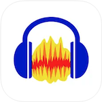</div>
    <div class="cell">Audacity is a free and open-source digital audio editor and recording application software, available for Windows, macOS, Linux, and other Unix-like operating systems.</div>
  </div>

  <div class="row">
    <div class="cell">Bias FX 2 <br> 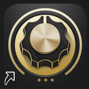</div>
    <div class="cell">An award-winning amp-and-effects processor that turns your computer or mobile device into a fully customizable guitar and bass rig.</div>
  </div>    
    
  <div class="row">
    <div class="cell">Capo <br> 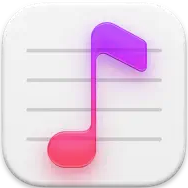</div>
    <div class="cell">Using the songs in your music collection, Capo guesses the beats, chords, and key of songs to help you break them down to their individual parts. Capo’s unique technology helps you to learn your favorites quickly as you improve your ear along the way.</div>
  </div>  

  <div class="row">
    <div class="cell">Focusrite Control <br> 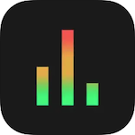</div>
    <div class="cell">Controls your monitor mixes and preamp settings wirelessly from wherever you want in your studio.</div>
  </div>

  <div class="row">
    <div class="cell">Garage Band (iPad) <br> 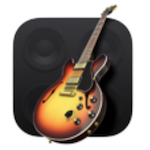</div>
    <div class="cell">GarageBand is a fully equipped music creation studio right inside your Mac. You can create with or without instrument.</div>
  </div>
    
  <div class="row">
    <div class="cell">Guitar Gravitas <br> 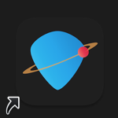</div>
    <div class="cell">An inspirational tool for guitar players of all levels that offers the most comprehensive, advanced and interactive chord, arpeggio and scale library in the App Store. You can access millions of chord shapes, thousands of arpeggios and scale patterns, alternate tunings, chord, aperggio and scale finders, and much more.</div>
  </div>

  <div class="row">
    <div class="cell">Guitar Jam Tracks <br> </div>
    <div class="cell">Learn guitar scales with this practice buddy and scale trainer, Guitar Jam Tracks. It can also help you jam, improve your rhythm, and get comfortable performing with other musicians. Fun!</div>
  </div>

  <div class="row">
    <div class="cell">Guitar Pro <br> 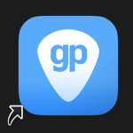</div>
    <div class="cell">Guitar Pro is the leading software for reading and editing tabs. For 25 years, Guitar Pro has been helping musicians worldwide learn to play the guitar, compose songs, and transcribe and edit songbooks.</div>
  </div>

  <div class="row">
    <div class="cell">Logic Pro <br> 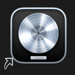</div>
    <div class="cell">Logic Pro is a full-featured music and audio app you can use for every aspect of music creation: recording, arranging, mixing, and more–everything from sketching your initial ideas to producing polished final mixes.</div>
  </div>

  <div class="row">
    <div class="cell">Loopy HD (iPad) <br> 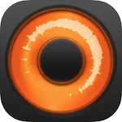</div>
    <div class="cell">Create music with Loopy HD by layering looped recordings of singing, beatboxing, or playing an instrument with a savvy, sophisticated, tactile looper that totally reinvents the formula.</div>
  </div> 

  <div class="row">
    <div class="cell">Medly (iPad) <br> 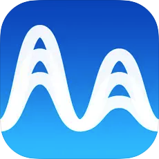</div>
    <div class="cell">Music-making for everyone. From new to experienced, Medly has everything you need to unleash your musical spark. A Best of App Store 2016 winner, Medly’s simple interface is packed with advanced tools to create productions. Get started for free with the Starter Pack of 17 instruments and over 100 loops and samples.</div>
  </div>
    
  <div class="row">
    <div class="cell">Music <br> 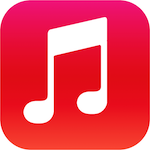</div>
    <div class="cell">Apple describes the Music app as a "music streaming experience," whereas the company described iTunes as a digital library and online music store. Previous iTunes versions designed for older macOS versions, as well as iTunes for Windows, will remain unaffected.</div>
  </div>

  <div class="row">
    <div class="cell">Neck Diagrams<br> 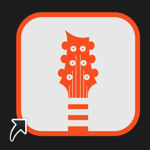</div>
    <div class="cell">Neck Diagrams gives you a range of powerful tools to produce your own professional quality fretboard diagrams quickly, easily and in a range of formats.</div>
  </div>

  <div class="row">
    <div class="cell">PA Installation Manager <br> 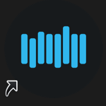</div>
    <div class="cell">The PA Installation Manager is the most convenient way to download and install Plugin Alliance products. By simply downloading and installing the IM, you can quickly and easily browse the vast Plugin Alliance collection and select just the products you want to download and install on your system.</div>
  </div>

   <div class="row">
    <div class="cell">Sountcorset (iPad) <br> 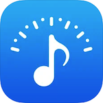</div>
    <div class="cell">Tuner & Metronome is the best free app for musicians. The most accurate chromatic tuner and professional hands-free metronome. Free sheet musics are available.. Designed by musicians - superfast and simple!</div>
  </div>
    
  <div class="row">
    <div class="cell">Shazam <br> 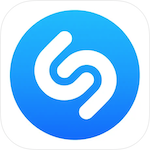</div>
    <div class="cell">Shazam is an app that uses song recognition technology to detect and recognize a song that is playing remotely. Say you hear a song playing on the radio or TV that you enjoyed, but don't know the artist or song title. You can open the Shazam app, tap, and hold your phone close to the radio for about 10 seconds.</div>
  </div>

  <div class="row">
    <div class="cell">Tonebridge Guitar Effects <br> 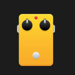</div>
    <div class="cell">Tonebridge gives you the sound of the original sone out of the box. Plug your guitar into your Mac and start playing.</div>
  </div>

  <div class="row">
    <div class="cell">X Drummer <br> 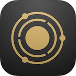</div>
    <div class="cell">X Drummer is the ultimate drum production tool for guitarists, songwriters and mobile musicians. Start your musical journey by playing a simple riff on your guitar - X Drummer listens in real-time, searching for a matching drum performance based on the tempo and feel of your riff. The extensive groove library offers detailed realism, encompassing the subtle nuances of a real drummer and delivering realistic drum performances - not just generic backing tracks.</div>
  </div>
    
</div>
  
</body>
